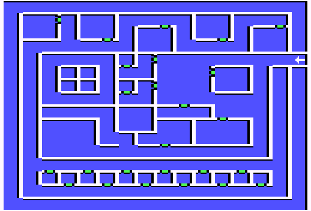

Tundra
| X | Y | Event |
| 7 | 11 | Tundra Arms Inn |
| 6 | 11 | Portal to Sandsobar |
| 7 | 9 | Luccky Dog Saloon |
| 6 | 9 | Portal to Vulcania |
| 11 | 10 | Thundrax Weaponry |
| 9 | 7 | Join Tundran Mage Guild |
| 11 | 6 | Enhancement center |
| 15 | 11 | Exit |
| 15 | 8 | Snow Beast |
| 2 | 14 | Saracen's Denial |
| 5 | 13 | International Market |
| 8 | 13 | Columbus's Sextant |
| 11 | 13 | White Dove Temple |
| 14 | 13 | Mystic Mage Guild |
| 7 | 6 | Stairs to Cavern |